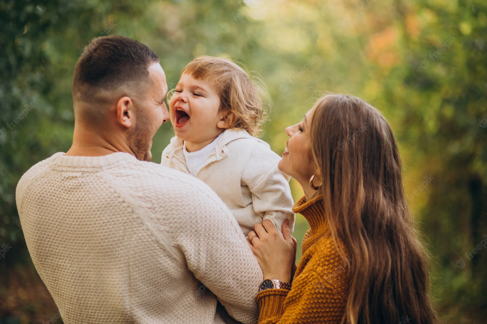
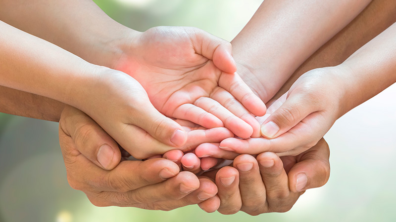

O Quê é a cultura da paz na família e o quê ela promove?
A cultura da paz na família é uma ação que deseja construir uma cultura pacífica que promova igualdade, liberdade, justiça, democracia, direitos humanos, tolerância e solidariedade nas casas brasileiras, ela promove uma relação harmoniosa entre os membros da família, usando um diálogo franco e negociação.
Como a cultura da paz surgiu? Quem foi seu criador?
A cultura da paz começou em 1999 e é focada em prevenir qualquer tipo de ameaça à paz e à segurança, como o holocausto, utilizando com principais ferramentas a conscientização, a educação e a prevenção. sua criadora foi a (Organização das Nações Unidas para a Educação, a Ciência e a Cultura) mais conhecida como UNESCO.
Como está a paz no mundo?
Segundo a edição de 2021, com dados relativos a 2020, o Índice Global de Paz caiu 0,07% comparado ao ano anterior, com melhorias identificadas em 87 países e deteriorações em 73.
Porque tem muitas brigas entre familiares?
Uma briga de família pode surgir por diversos motivos: dinheiro, choque de personalidades, descaso, ciúmes, ou até mesmo negócios e decisões pessoais. Muitos conflitos familiares são frutos de decepções e frustrações que surgem a partir da confirmação de que as expectativas criadas em torno da relação não serão satisfeitas.
Como poderíamos ter paz na família?
Quando todos os membros da família fazem seus deveres dentro de casa e todos trabalham cooperando uns com os outros, criamos um ambiente harmonioso e saudável.